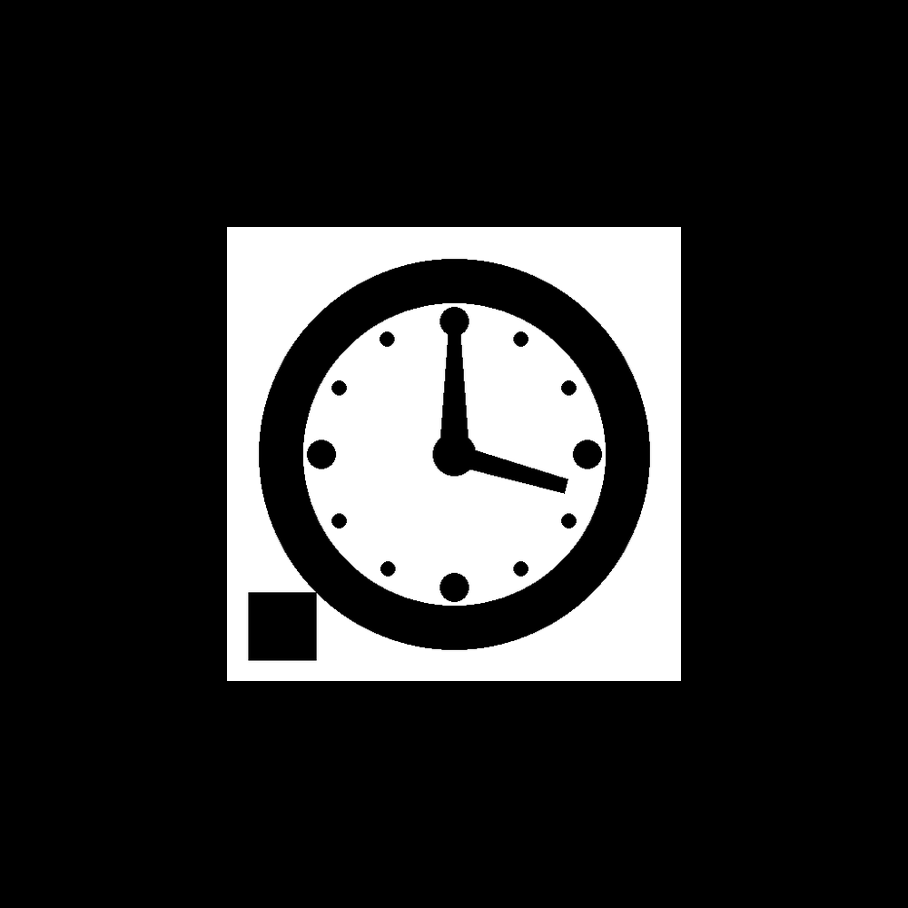
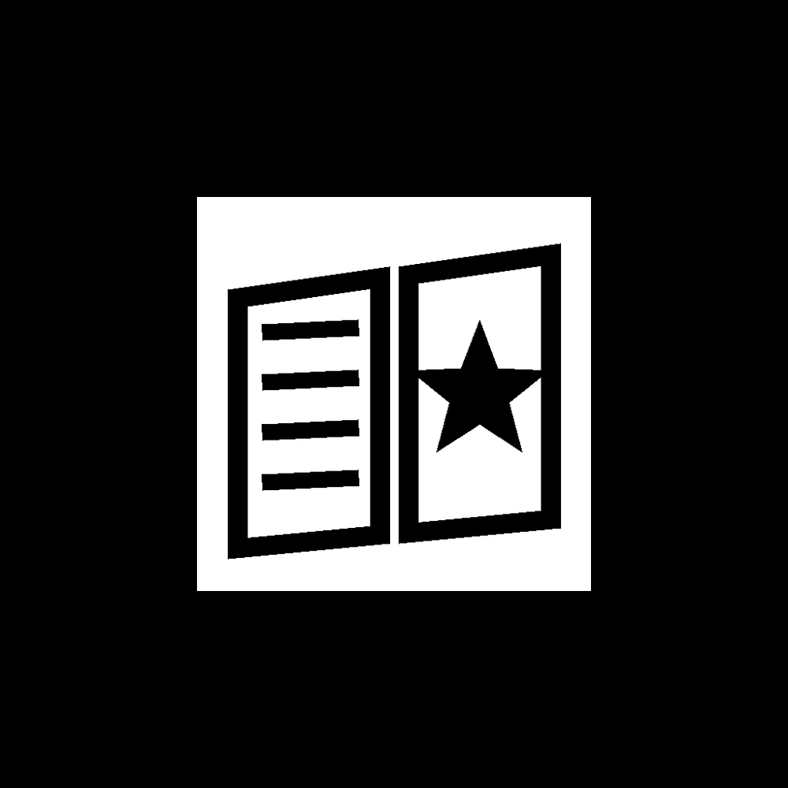
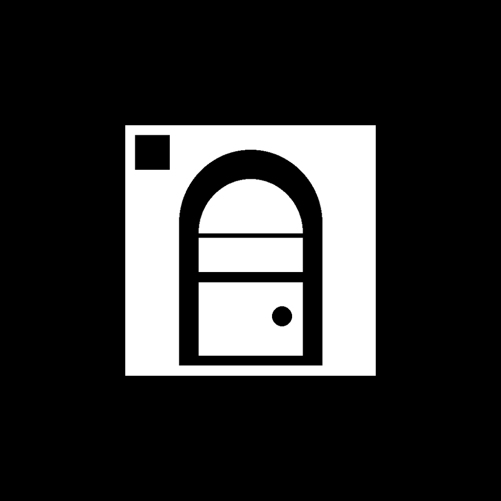

Marqueurs à imprimer
Les jeux en réalité augmentée « sur la table » reconnaissent ces images. Imprime-les, ou affiche-les en plein écran sur une tablette ou un ordinateur.
- Au moins 10 cm de côté, en gardant la marge blanche autour du carré noir.
- Papier mat de préférence, bien à plat ou collé au mur, sans pli.
- Une pièce bien éclairée, sans reflet de lampe sur le marqueur.
Défense du château
HiroLe château apparaît dessus
L'Évasion du manoir

HorlogeIndice I
GrimoireIndice IILanterneIndice III
CoffreS'ouvre avec le code

PorteLa sortie